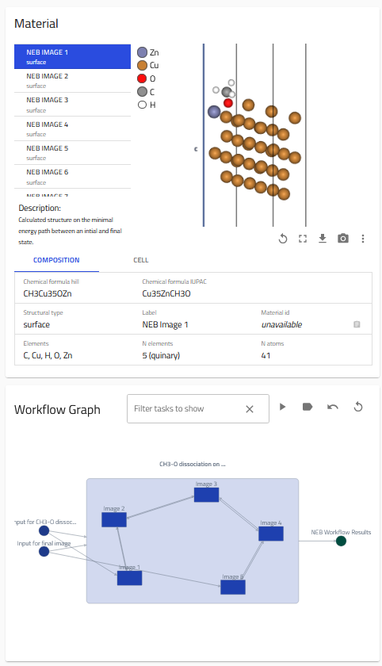
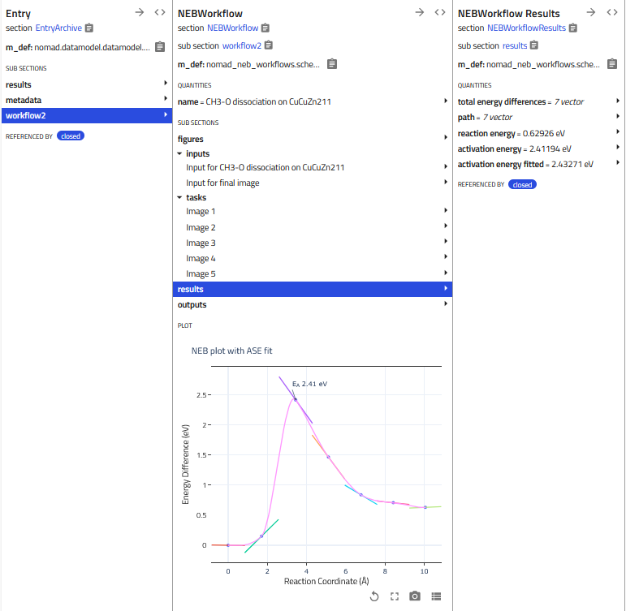

How to Use This Plugin¶
To use the plugin functionality you need to provide a workflow.yaml file which points to the entries or mainfiles of the (DFT) calculations of the individual images belonging to the reaction path of interest. This usually includes a converged intial and final state, which should be provided as input to the workflow, as well as a number of intermediate images on the reaction path, which should be given as individual tasks. You can find an example for a standard neb workflow.yaml file below, for the case that the workflow file is placed in the same upload as the dft calculation folders.
workflow2:
m_def: nomad_neb_workflows.schema_packages.neb.NEBWorkflow
name: 'AlCo2S4 NEB Workflow'
inputs:
- name: Input structure for reference image
section: '../upload/archive/mainfile/AlCo2S4/neb/00/OUTCAR#/'
- name: Input structure for image 6
section: '../upload/archive/mainfile/AlCo2S4/neb/05/OUTCAR#/'
tasks:
- name: Input structure for image 2
section: '../upload/archive/mainfile/AlCo2S4/neb/01/OUTCAR#/'
- name: Input structure for image 3
section: '../upload/archive/mainfile/AlCo2S4/neb/02/OUTCAR#/'
- name: Input structure for image 4
section: '../upload/archive/mainfile/AlCo2S4/neb/03/OUTCAR#/'
- name: Input structure for image 5
section: '../upload/archive/mainfile/AlCo2S4/neb/04/OUTCAR#/'
Instead of the relative location as shown above, you can also use the absolute path to the individual entries pointing to the section '/uploads/{upload_id}/archive/{entry_id}#/', e.g. something like '/uploads/l_mldUFpS-ilzqNeoR_mFw/archive/25P9WSXdCgJIyop1wE8rtMvR3jiP#/'. In this case the workflow files can also be placed in separate uploads. This can be especially handy if you are e.g. pointing to already published NOMAD entries.
The workflow entry¶
If your workflow.yaml file is processed correctly, you can expect to see an overview page with a Material card, showing the structure of the individual images and composition, and a Workflow Graph card.

The normalize function of the NEBWorkflow section automatically extracts relative energies and the path (corresponding to the 1D projection of the reaction coordinate) with respect to the 1st image provided in inputs, and plots them in a figure. If forces are provided in the original calculation outputs, the gradients are added to the plot. The NEB fit is provided by ASE, (Atomic Simulation Environment) using their fitting function.
